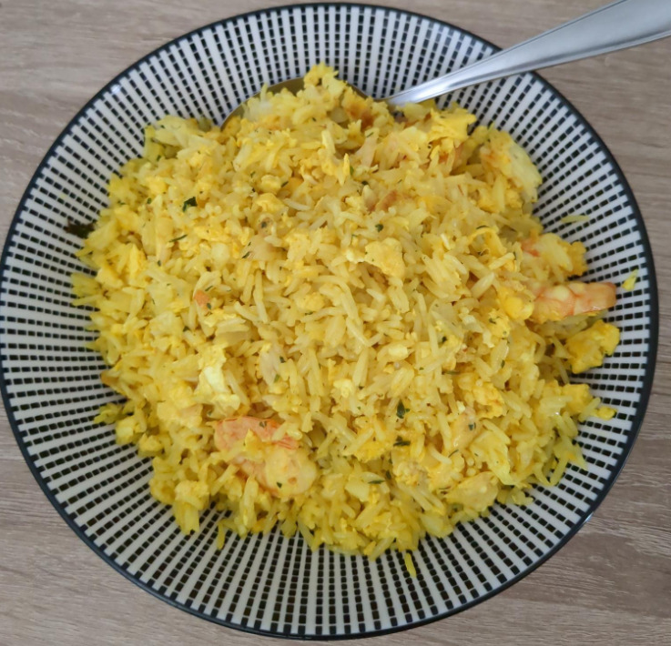

🍚 Shrimp rice
First Published: 2023-10-14

- Prep time: 5 min
- Cook time: 25 min
Ingredients
- 100g (frozen) shrimp
- 2 eggs
- 150g basmati rice
- 1 small white onion
- 2 cloves of garlic
- ~50ml Rapeseed oil (sub: sunflower oil)
- 1 sp turmeric (sub: curry powder)
- 1 tsp white pepper
- 1 tsp sesame seeds (opt)
- some green garnish (opt)
- rice cooker (buy one, it's worth it)
- pan
- cooking spoon
- cutting board
- knife
Directions
- Put rice into rice cooker
- Heat oil in the pan
- Chop the garlic
- Chop the onion
- Put garlic and onion into the pan
- Add white pepper
- Leave for 2 minutes on high heat
- Add eggs
- Leave for another 3 minutes, stir occasionally
- Add shrimp
- Leave 5 min
- Flip the shrimp
- Leave another 5 minutes
- Add rice, turmeric and sesame seeds
- Stir well until the rice is all yellow
- Leave on low heat for 2-5 minutes
- Optionally garnish with some green herbs
- Done. Serves 2